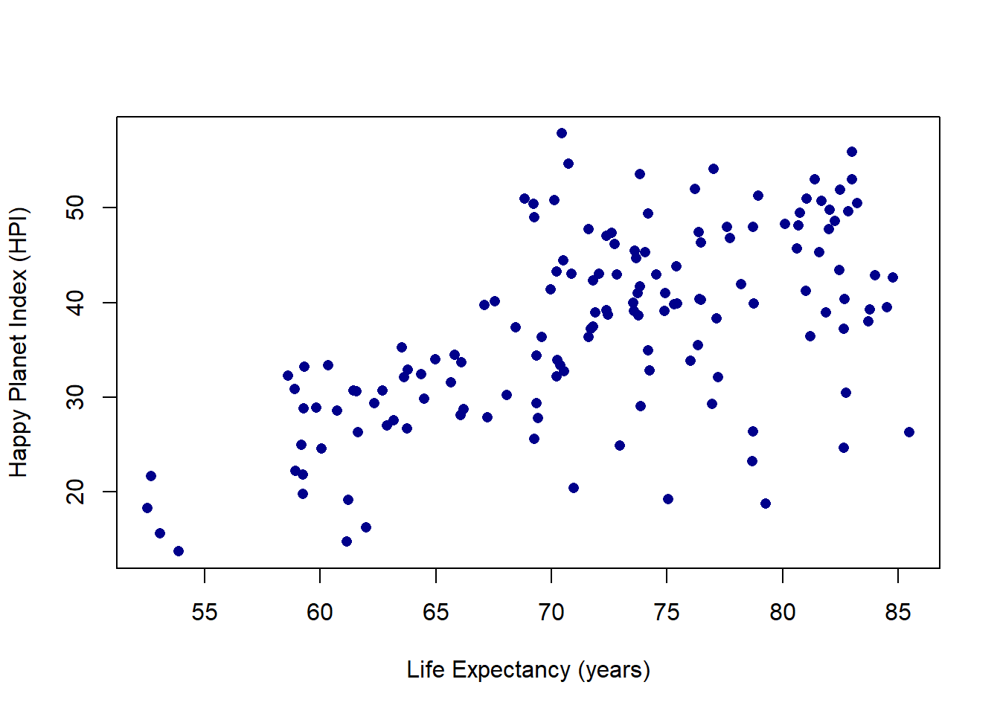
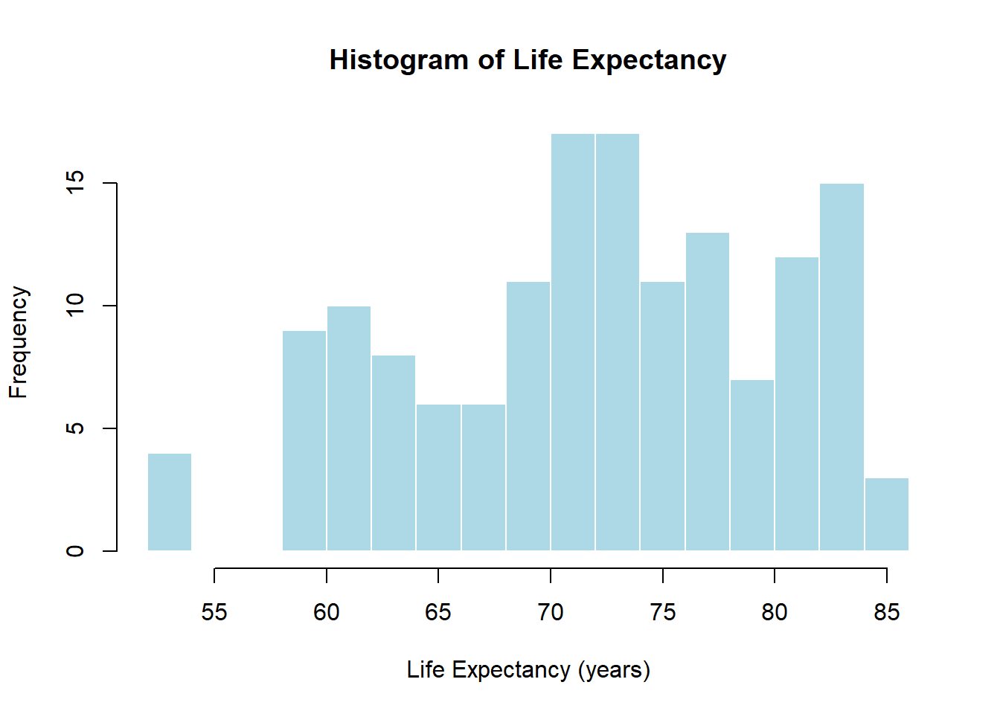
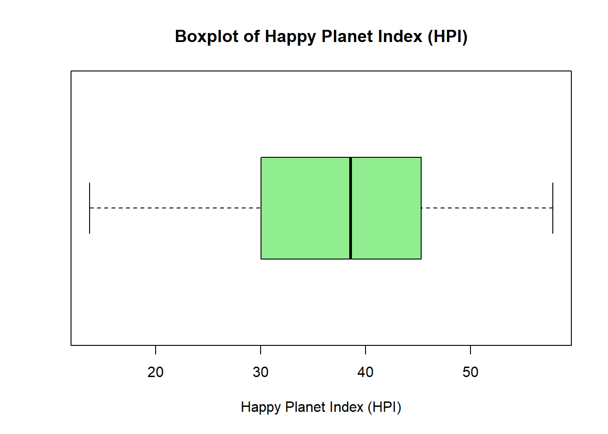
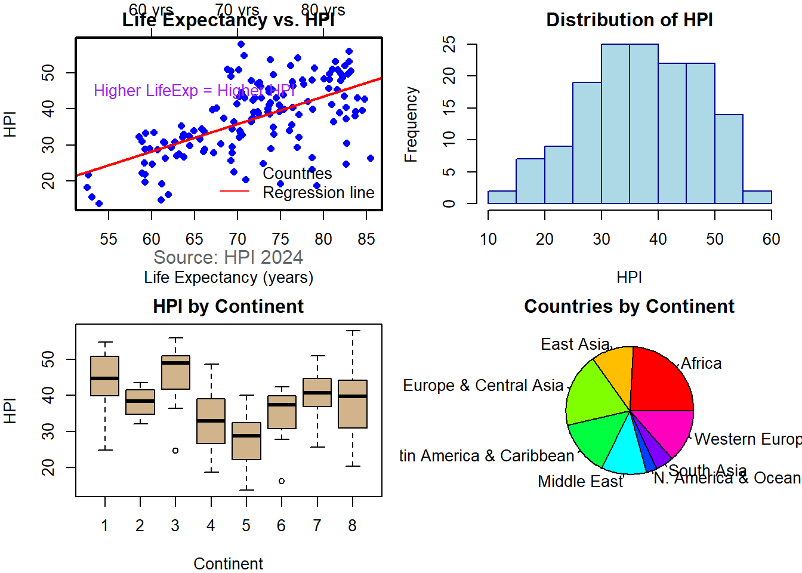
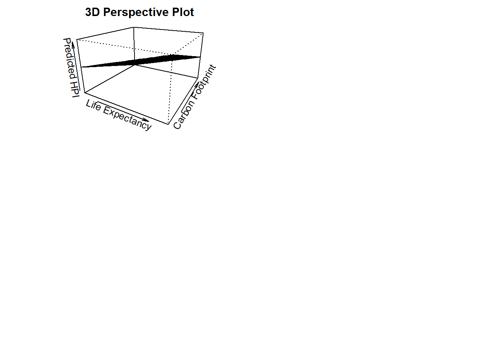

library(readxl)
library(dplyr)
Attaching package: 'dplyr'The following objects are masked from 'package:stats':
filter, lagThe following objects are masked from 'package:base':
intersect, setdiff, setequal, unionhpi = read_excel("hpi_2024_public_dataset.xlsx", sheet = "1. All countries", skip = 7)New names:
• `` -> `...4`head(hpi)# A tibble: 6 × 12
`HPI rank` Country ISO ...4 Continent `Population (thousands)`
<dbl> <chr> <chr> <chr> <dbl> <dbl>
1 NA Burundi BDI 2021BDI 5 12551.
2 NA Sudan SDN 2021SDN 5 45657.
3 1 Vanuatu VUT 2021VUT 8 319.
4 2 Sweden SWE 2021SWE 3 10467.
5 3 El Salvador SLV 2021SLV 1 6314.
6 4 Costa Rica CRI 2021CRI 1 5154.
# ℹ 6 more variables: `Life Expectancy (years)` <dbl>,
# `Ladder of life (Wellbeing) (0-10)` <dbl>,
# `Carbon Footprint (tCO2e)` <dbl>, HPI <dbl>,
# `CO2 threshold for year (tCO2e)` <dbl>, `GDP per capita ($)` <dbl>colnames(hpi) [1] "HPI rank" "Country"
[3] "ISO" "...4"
[5] "Continent" "Population (thousands)"
[7] "Life Expectancy (years)" "Ladder of life (Wellbeing) (0-10)"
[9] "Carbon Footprint (tCO2e)" "HPI"
[11] "CO2 threshold for year (tCO2e)" "GDP per capita ($)" plot(hpi$"Life Expectancy (years)", hpi$HPI, pch = 16, col = "darkblue",
xlab = "Life Expectancy (years)",
ylab = "Happy Planet Index (HPI)")
hist(hpi$"Life Expectancy (years)", breaks = 20, col = "lightblue",
border = "white",
main = "Histogram of Life Expectancy",
xlab = "Life Expectancy (years)")
boxplot(hpi$HPI, horizontal = TRUE, col = "lightgreen",
main = "Boxplot of Happy Planet Index (HPI)",
xlab = "Happy Planet Index (HPI)")
hpi <- hpi %>%
rename(LifeExp = `Life Expectancy (years)`)
# ---- 1. Scatter with par(), points(), lines(), axis(), box(), text(), mtext(), legend() ----
par(mfrow = c(2, 2), mar = c(4, 4, 2, 1)) # grid layout
plot(hpi$LifeExp, hpi$HPI,
xlab = "Life Expectancy (years)", ylab = "HPI",
main = "Life Expectancy vs. HPI", col = "blue", pch = 16)
abline(lm(HPI ~ LifeExp, data = hpi), col = "red", lwd = 2)
# Add top axis
axis(3, at = seq(40, 85, 10), labels = paste0(seq(40, 85, 10), " yrs"))
# Add box around plot
box(lwd = 2)
# Add annotation
text(65, 45, "Higher LifeExp = Higher HPI", col = "purple")
# Add margin text
mtext("Source: HPI 2024", side = 1, line = 2, col = "gray40")
# Add legend
legend("bottomright", legend = c("Countries", "Regression line"),
col = c("blue", "red"), pch = c(16, NA), lty = c(NA, 1), bty = "n")
# ---- 2. Histogram ----
hist(hpi$HPI, col = "lightblue", border = "darkblue",
main = "Distribution of HPI", xlab = "HPI")
# ---- 3. Boxplot ----
boxplot(HPI ~ Continent, data = hpi,
col = "tan", main = "HPI by Continent",
xlab = "Continent", ylab = "HPI")
# ---- 4. Pie chart + names() ----
continent_labels <- c(
"1" = "Latin America & Caribbean",
"2" = "N. America & Oceania",
"3" = "Western Europe",
"4" = "Middle East",
"5" = "Africa",
"6" = "South Asia",
"7" = "Eastern Europe & Central Asia",
"8" = "East Asia"
)
# Replace numeric codes with names
hpi$Continent <- as.character(hpi$Continent)
hpi$Continent <- continent_labels[hpi$Continent]
#hpi$Continent <- as.character(hpi$Continent)
#hpi$Continent <- ifelse(hpi$Continent %in% names(continent_labels),
#continent_labels[hpi$Continent],
#"Unknown")
continent_counts <- table(hpi$Continent)
pie(continent_counts,
col = rainbow(length(continent_counts)),
main = "Countries by Continent")
# ---- 5. Perspective plot ----
# Create grid for LifeExp vs. Carbon → predict HPI
# Remove non-numeric characters and convert
hpi$Carbon <- as.numeric(hpi$`Carbon Footprint (tCO2e)`)
# Confirm it worked
summary(hpi$Carbon) Min. 1st Qu. Median Mean 3rd Qu. Max.
0.201 2.182 5.488 7.305 10.107 42.201 x_seq <- seq(min(hpi$LifeExp, na.rm=TRUE), max(hpi$LifeExp, na.rm=TRUE), length=30)
y_seq <- seq(min(hpi$Carbon, na.rm=TRUE), max(hpi$Carbon, na.rm=TRUE), length=30)
z_mat <- outer(x_seq, y_seq, function(a, b) {
predict(lm(HPI ~ LifeExp + Carbon, data=hpi),
newdata=data.frame(LifeExp=a, Carbon=b))
})
persp(x_seq, y_seq, z_mat,
theta = 30, phi = 20, expand = 0.6, col = "lightgreen",
xlab = "Life Expectancy", ylab = "Carbon Footprint", zlab = "Predicted HPI",
main = "3D Perspective Plot")